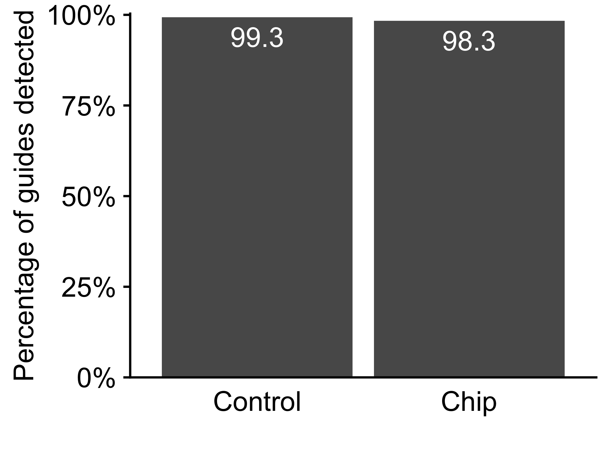
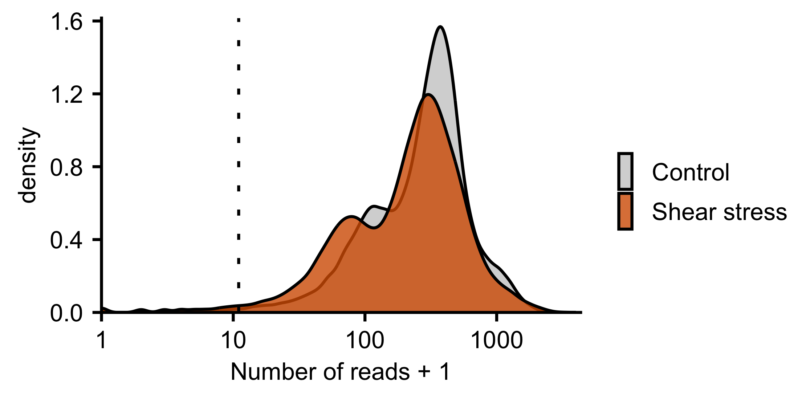

Shear stress CRISPR experiment
Differential abundance using MAGeCK rra module for Brunello library
Francesc Castro-Giner
January 09, 2025
Last updated: 2025-01-09
Checks: 7 0
Knit directory: ildiz-ctc-shear-stress/
This reproducible R Markdown analysis was created with workflowr (version 1.7.1). The Checks tab describes the reproducibility checks that were applied when the results were created. The Past versions tab lists the development history.
Great! Since the R Markdown file has been committed to the Git repository, you know the exact version of the code that produced these results.
Great job! The global environment was empty. Objects defined in the global environment can affect the analysis in your R Markdown file in unknown ways. For reproduciblity it’s best to always run the code in an empty environment.
The command set.seed(20250108) was run prior to running
the code in the R Markdown file. Setting a seed ensures that any results
that rely on randomness, e.g. subsampling or permutations, are
reproducible.
Great job! Recording the operating system, R version, and package versions is critical for reproducibility.
Nice! There were no cached chunks for this analysis, so you can be confident that you successfully produced the results during this run.
Great job! Using relative paths to the files within your workflowr project makes it easier to run your code on other machines.
Great! You are using Git for version control. Tracking code development and connecting the code version to the results is critical for reproducibility.
The results in this page were generated with repository version 8eab388. See the Past versions tab to see a history of the changes made to the R Markdown and HTML files.
Note that you need to be careful to ensure that all relevant files for
the analysis have been committed to Git prior to generating the results
(you can use wflow_publish or
wflow_git_commit). workflowr only checks the R Markdown
file, but you know if there are other scripts or data files that it
depends on. Below is the status of the Git repository when the results
were generated:
Ignored files:
Ignored: .Rhistory
Ignored: .Rproj.user/
Ignored: analysis/figure/
Ignored: data/crispr/
Ignored: data/resources/
Ignored: data/rnaseq/
Untracked files:
Untracked: analysis/rnaseq-bulk-br16-time_series.Rmd
Untracked: analysis/rnaseq-bulk-brx07-time_series.Rmd
Untracked: analysis/rnaseq-bulk-brx50-time_series.Rmd
Untracked: code/R-functions/
Untracked: configuration/
Untracked: output/crispr/
Untracked: output/rnaseq/
Unstaged changes:
Modified: .gitignore
Modified: ildiz-ctc-shear-stress.Rproj
Note that any generated files, e.g. HTML, png, CSS, etc., are not included in this status report because it is ok for generated content to have uncommitted changes.
These are the previous versions of the repository in which changes were
made to the R Markdown (analysis/crispr-brunello.Rmd) and
HTML (docs/crispr-brunello.html) files. If you’ve
configured a remote Git repository (see ?wflow_git_remote),
click on the hyperlinks in the table below to view the files as they
were in that past version.
| File | Version | Author | Date | Message |
|---|---|---|---|---|
| Rmd | 8eab388 | Francesc Castro-Giner | 2025-01-09 | add crispr ORA fitness |
| html | 4178b40 | Francesc Castro-Giner | 2025-01-08 | Build site. |
| Rmd | ce461f6 | Francesc Castro-Giner | 2025-01-08 | add crispr, bulk and low-input RNA-seq analysis |
1 Load libraries, additional functions and data
Setup environment
knitr::opts_chunk$set(results='asis', echo=TRUE, message=FALSE, warning=FALSE, error=FALSE, fig.align = 'center', fig.width = 3.5, fig.asp = 0.618, dpi = 600, dev = c("png", "pdf"), engine.opts = list(bash = "-l"))
options(stringsAsFactors = FALSE)
use_seed <- 1100101
set.seed(use_seed)Load packages
library(tidyverse)
library(foreach)
library(SummarizedExperiment)
library(DT)
library(colorblindr)
library(ggdendro)
library(RColorBrewer)
library(circlize)
library(Hmisc)
library(ComplexHeatmap)
library(ineq)
library(knitr)
library(kableExtra)
library(magrittr)
library(ggrepel)
library(ggpubr)
library(ggbeeswarm)
library(ggridges)
library(openxlsx)
library(MAGeCKFlute)
library(janitor)Load ggplot theme
source("./configuration/rmarkdown/ggplot_theme.R")Load custom functions
source('./code/R-functions/dge_report.r')
source('./code/R-functions/gse_report.r')
source('./code/R-functions/gse_omnibus.r')
clean_msigdb_names <- function(x) x %>% gsub('HALLMARK_', '', .) %>% gsub('REACTOME_', '', .) %>% gsub('WP_', '', .) %>% gsub('BIOCARTA_', '', .) %>% gsub('KEGG_', '', .) %>% gsub('PID_', '', .) %>% gsub('GOBP_', '', .) %>% gsub('_', ' ', .)Clean files generated in previous runs
rmd_file <- current_input()
if(!is.null(rmd_file)) {
figures_dir <- file.path('./docs/figure',rmd_file)
if(dir.exists(figures_dir)) {
unlink(file.path(figures_dir, "*"))
}
}Load MSigDB gene sets
msigdb_vs <- 'v2022.1.Hs'
gmt_files_symbols <- list(
msigdb.c2.cp = paste0('./data/resources/MSigDB/', msigdb_vs, '/c2.cp.', msigdb_vs, '.symbols.gmt')
)2 Data procesing
Load Summarized Experiment object
se <- readRDS(params$se_file)Combine all sublibraries and generate descriptive statistics
se_chip <- se[!rowData(se)$control,se$condition == 'chip']
se_control <- se[!rowData(se)$control,se$condition == 'control']
mat_counts <- cbind(
chip = rowSums(assay(se_chip, 'counts')),
control = rowSums(assay(se_control, 'counts'))
)
mat_counts_norm <- cbind(
chip = rowSums(assay(se_chip, 'counts_norm_mageck')),
control = rowSums(assay(se_control, 'counts_norm_mageck'))
)
sec <- SummarizedExperiment(
assays = list(counts = mat_counts, counts_norm = mat_counts_norm),
colData = data.frame(sample_alias = 'chip', condition = 'chip') %>%
bind_rows(data.frame(sample_alias = 'control', condition = 'control')) %>%
DataFrame,
rowData = rowData(se_chip)
)
rowData(sec) %<>% data.frame %>%
bind_cols(chip_sum = rowSums(assay(se_chip, 'counts_norm_mageck'))) %>%
bind_cols(control_sum = rowSums(assay(se_control, 'counts_norm_mageck'))) %>%
DataFrameGenerate addditional statistics for combined SE
sec$n_reads <-apply(assay(sec, 'counts'), 2, sum)
sec$guides_over_1 <-apply(assay(sec, 'counts_norm') > 0, 2, sum)
sec$guides_over_5 <-apply(assay(sec, 'counts_norm') >= 5, 2, sum)
sec$guides_over_10 <-apply(assay(sec, 'counts_norm') >= 10, 2, sum)
sec$guides_over_30 <-apply(assay(sec, 'counts_norm') >= 30, 2, sum)
sec$guides_over_100 <-apply(assay(sec, 'counts_norm') >= 100, 2, sum)
sec$guides_over_500 <-apply(assay(sec, 'counts_norm') >= 500, 2, sum)
sec$p_guides_over_1 <-sec$guides_over_1 / nrow(sec)
sec$p_guides_over_5 <-sec$guides_over_5 / nrow(sec)
sec$p_guides_over_10 <-sec$guides_over_10 / nrow(sec)
sec$p_guides_over_30 <-sec$guides_over_30 / nrow(sec)
sec$p_guides_over_500 <-sec$guides_over_500 / nrow(sec)
# assay(sec, 'counts_norm') >= 10
# sec$gini_index <- assay(se, 'counts') %>% apply(., 2, ineq, type = 'Gini')
# sec$gini_index_log <- log10(assay(se, 'counts') + 1) %>% apply(., 2, ineq, type = 'Gini')
gene_table_stas <- rowData(sec) %>% data.frame %>%
group_by(gene) %>%
summarise(
n_chip_over_1 = sum(chip_sum > 1),
n_chip_over_5 = sum(chip_sum > 5),
n_chip_over_10 = sum(chip_sum > 10),
n_chip_over_30 = sum(chip_sum > 30),
n_chip_over_100 = sum(chip_sum > 100),
n_chip_over_500 = sum(chip_sum > 500),
n_control_over_1 = sum(control_sum > 1),
n_control_over_5 = sum(control_sum > 5),
n_control_over_10 = sum(control_sum > 10),
n_control_over_30 = sum(control_sum > 30),
n_control_over_100 = sum(control_sum > 100),
n_control_over_500 = sum(control_sum > 500)
)
gene_table <- rowData(sec) %>% data.frame %>%
group_by(gene) %>%
summarise(
n_chip_over_1 = sum(chip_sum > 1),
n_chip_over_5 = sum(chip_sum > 5),
n_chip_over_10 = sum(chip_sum > 10),
n_chip_over_30 = sum(chip_sum > 30),
n_chip_over_100 = sum(chip_sum > 100),
n_chip_over_500 = sum(chip_sum > 500),
n_control_over_1 = sum(control_sum > 1),
n_control_over_5 = sum(control_sum > 5),
n_control_over_10 = sum(control_sum > 10),
n_control_over_30 = sum(control_sum > 30),
n_control_over_100 = sum(control_sum > 100),
n_control_over_500 = sum(control_sum > 500)
) %>%
mutate(
depleted_chip = n_chip_over_10 < 2,
depleted_control = n_control_over_10 < 2
) %>%
dplyr::select(gene, starts_with('depleted'), ends_with('over_10'), everything())3 Configure analyses
List of comparisons
x <- colData(se) %>% data.frame
comp_list <- list(
sublibrary_1 = list(
x %>% filter(sg_rna_sublibrary == 1 & condition == 'chip') %>% pull(sample_alias),
x %>% filter(sg_rna_sublibrary == 1 & condition == 'control') %>% pull(sample_alias),
rowData(se) %>% data.frame %>% filter(sublibrary %in% c("1", "control") ) %>% rownames
),
sublibrary_2 = list(
x %>% filter(sg_rna_sublibrary == 2 & condition == 'chip') %>% pull(sample_alias),
x %>% filter(sg_rna_sublibrary == 2 & condition == 'control') %>% pull(sample_alias),
rowData(se) %>% data.frame %>% filter(sublibrary %in% c("2", "control") ) %>% rownames
),
sublibrary_3 = list(
x %>% filter(sg_rna_sublibrary == 3 & condition == 'chip') %>% pull(sample_alias),
x %>% filter(sg_rna_sublibrary == 3 & condition == 'control') %>% pull(sample_alias),
rowData(se) %>% data.frame %>% filter(sublibrary %in% c("3", "control") ) %>% rownames
),
sublibrary_4 = list(
x %>% filter(sg_rna_sublibrary == 4 & condition == 'chip') %>% pull(sample_alias),
x %>% filter(sg_rna_sublibrary == 4 & condition == 'control') %>% pull(sample_alias),
rowData(se) %>% data.frame %>% filter(sublibrary %in% c("4", "control") ) %>% rownames
),
sublibrary_5 = list(
x %>% filter(sg_rna_sublibrary == 5 & condition == 'chip') %>% pull(sample_alias),
x %>% filter(sg_rna_sublibrary == 5 & condition == 'control') %>% pull(sample_alias),
rowData(se) %>% data.frame %>% filter(sublibrary %in% c("5", "control") ) %>% rownames
)
)data_comp <- foreach(i = names(comp_list), .combine = rbind) %do% {
c(
Comparison = i,
Case = paste(comp_list[[i]][[1]], collapse = " "),
Control = paste(comp_list[[i]][[2]], collapse = " ")
)
}
data_comp %>%
datatable(.,
rownames = FALSE,
filter = 'top',
caption = 'Comparison of guide abundance. P value by two-sided Wiloxon test',
extensions = 'Buttons',
options = list(
dom = 'Blfrtip',
buttons = c('csv', 'excel'),
columnDefs = list(
list(width = 120, targets = 1:2)
)
)
)4 Run MAGeCK
Generate MAGeCK test scripts. Run MAGeCK test for each comparison in the terminal
out_dir <- file.path(params$output_dir, params$mageck_dir)
dir.create(out_dir, recursive = TRUE, showWarnings = FALSE)
# Generate list of control sgRNA IDs
non_target_list <- rowData(se) %>% data.frame %>% filter(control) %>% rownames %>% data.frame
write_tsv(non_target_list, file = file.path(out_dir, 'control_sgrna.txt'), col_names = F)
# Generate files by comparison
res_cmd <- foreach(i = names(comp_list), .combine = rbind) %do% {
use_comp <- comp_list[[i]]
# Generate count matrix
count_mat_name <- paste0(i,'.counts.txt')
count_mat <- assay(se[use_comp[[3]],], 'counts') %>%
data.frame(check.names = FALSE) %>%
rownames_to_column('sgrna_name') %>%
left_join(rowData(se) %>% data.frame %>% select(sgrna_name, gene)) %>%
dplyr::select(sgrna_name, gene, everything())
write_tsv(count_mat, file = file.path(out_dir, count_mat_name))
# Generate mageck commands
paste('mageck test -k', count_mat_name, '--control-sgrna control_sgrna.txt --norm-method control -t', paste(comp_list[[i]][[1]], collapse = ','),'-c', paste(comp_list[[i]][[2]], collapse = ','), '-n', i, '\n')
} %>% data.frame()
res_cmd <- rbind('conda activate mageckenv', res_cmd, 'conda deactivate')
write_tsv(res_cmd, file.path(out_dir, 'run_mageck_test.sh'), col_names = FALSE)Load MAGeCK results
gene_summ_files <- list.files(path = file.path(params$output_dir, params$mageck_dir), pattern = 'gene_summary.txt', full.names = TRUE)
analysis_prefix <- basename(gene_summ_files) %>% gsub(".gene_summary.txt", "", .)
gene_summ <- foreach(i = gene_summ_files) %do% {read.delim(i, check.names = FALSE) %>% clean_names()}
names(gene_summ) <- analysis_prefix
sgrna_summ_files <- list.files(path = file.path(params$output_dir, params$mageck_dir), pattern = 'sgrna_summary.txt', full.names = TRUE)
analysis_prefix <- basename(sgrna_summ_files) %>% gsub(".sgrna_summary.txt", "", .)
sgrna_summ <- foreach(i = sgrna_summ_files) %do% {read.delim(i, check.names = FALSE) %>% clean_names()}
names(sgrna_summ) <- analysis_prefixCombine sublibrary results
gene_summ$combined <- foreach(i = names(gene_summ), .combine = rbind) %do% {
gene_summ[[i]] %>%
mutate(sublibrary = i)
}
sgrna_summ$combined <- foreach(i = names(sgrna_summ), .combine = rbind) %do% {
sgrna_summ[[i]] %>%
mutate(sublibrary = i)
}
# recalculate FDR after combining sublibraries
gene_summ$combined %<>%
mutate(
neg_fdr = p.adjust(neg_p_value, 'BH'),
pos_fdr = p.adjust(pos_p_value, 'BH')
)
sgrna_summ$combined %<>%
mutate(
fdr = p.adjust(p_twosided, 'BH')
)
# recalculate rank
gene_summ$combined %<>%
mutate(
neg_rank = rank(neg_p_value, ties.method = 'first'),
pos_rank = rank(pos_p_value, ties.method = 'first')
)5 Run GSE omnibus
library(org.Hs.eg.db)
x <- gene_summ$combined
gse_res <- gse_omnibus(
feature_names = x$id,
p = x$neg_fdr,
fc = x$neg_lfc,
fc_thrs = 0.1,
gmt_files = gmt_files_symbols,
run_enricher = TRUE,
args_enricher = list(minGSSize = 10, maxGSSize = 2500, pvalueCutoff = 1),
)
saveRDS(gse_res, file = file.path(params$output_dir, params$mageck_dir, 'gse.rds'))gse_res <- readRDS(file.path(params$output_dir, params$mageck_dir, 'gse.rds'))6 Extended Data Figure 5a: CRISPR screen data quality control
Bar plots showing the percentage of detected gRNAs in samples incubated in static conditions (control) or circulated through the microfluidic platform (shear stress; left). Density plots showing the distribution of read counts of gRNAs retrieved in control (n = 1) and shear stress (n = 1) conditions. Dashed line indicates the detection threshold (10 counts) (right).
use_linewidth <- 1/2.141959
colData(sec) %>% data.frame %>%
mutate(
sample_alias = str_to_title(sample_alias),
sample_alias = factor(sample_alias, levels = c('Control', 'Chip'))
) %>%
ggplot(aes(sample_alias, p_guides_over_10)) +
geom_col() +
geom_text(aes(label = round(100*p_guides_over_10, 1)),
vjust = 1.5,
colour = "white",
size = geom_text_size) +
scale_y_continuous(expand = expansion(mult = c(0, 0.01)),
labels = scales::percent) +
labs(
x = '',
y = 'Percentage of guides detected'
) +
theme(
axis.ticks = element_line(linewidth = use_linewidth/2),
axis.ticks.x = element_blank(),
axis.line = element_line(linewidth = use_linewidth/2)
)
use_data <- cbind(
rowData(sec) %>% data.frame %>% dplyr::select(sublibrary),
assay(sec, 'counts')
) %>%
pivot_longer(
cols = all_of(c('chip', 'control')),
names_to = 'condition',
values_to = 'counts') %>%
mutate(
condition = ifelse(condition == 'control', 'Control', 'Shear stress')
)
use_linewidth <- 1/2.141959
use_data %>%
ggplot(aes(counts + 1, fill = condition)) +
geom_density(alpha = 0.8, linewidth = use_linewidth/2) +
geom_vline(xintercept = 11, lty = 3, linewidth = use_linewidth/2) +
scale_fill_manual(values = c(Control = 'grey80', `Shear stress` = '#D55E00')) +
scale_y_continuous(expand = expansion(mult = c(0, 0.03))) +
scale_x_continuous(expand = expansion(mult = c(0, 0.01)), trans = 'log10') +
labs(
x = 'Number of reads + 1',
fill = ''
)+
theme(
axis.ticks = element_line(linewidth = use_linewidth/2),
axis.line = element_line(linewidth = use_linewidth/2),
axis.text = element_text(size = 4),
axis.title = element_text(size = 4),
legend.text = element_text(size = 4),
legend.key.width = unit(0.1, "cm")
)
7 Extended Data Figure 5b: CRISPR screen data quality control
Over-Representation analysis (ORA) plot of genes depleted in static conditions. FDR, false discovery rate.
x <- gene_table %>%
mutate(
detected = n_chip_over_10 >= 2,
p = ifelse(!detected, 0.01, 1),
fc = ifelse(!detected,2, 0)
)
ora_fitness <- gse_omnibus(
feature_names = x$gene,
p = x$p,
fc = x$fc,
fc_thrs = 0.1,
gmt_files = gmt_files_symbols,
run_enricher = TRUE,
run_enrichGO = TRUE,
return_sets = 'abs',
go_ontologies = c('BP'),
go_simplify = TRUE,
go_simplify_p = 0.05,
go_simplify_cutoff = 0.4,
args_enricher = list(minGSSize = 10, maxGSSize = 250, pvalueCutoff = 1),
annot_db = 'org.Hs.eg.db',
organism = 'hsapiens'
)
saveRDS(ora_fitness, file = file.path(params$output_dir, 'ora_fitness.rds'))GO-BP, gene sets with an adjusted P < 0.05
ora_fitness <- readRDS(file.path(params$output_dir, 'ora_fitness.rds'))
use_linewidth <- 1/2.141959
ora_fitness$enrichGO$abs$BP@result %>%
filter(simplify) %>%
filter(p.adjust < 0.05) %>%
mutate(Description = fct_reorder(Description, -log10(p.adjust))) %>%
ggplot(aes(-log10(p.adjust), Description,
color = -log10(p.adjust),
size = GeneProp)) +
geom_point(shape = 19) +
scale_color_gradient(
high = "#132B43",
low = "#56B1F7"
) +
scale_y_discrete(labels = default_labeller(50)) +
scale_x_continuous(expand = expansion(mult = c(0.1, 0.1))) +
scale_size_continuous(range=c(0.8, 2)) +
labs(y = '',
x = '',
size = expression(paste("lo", g[10],"(FDR)")),
color = 'FDR < 0.05'
) +
theme(
text = element_text(size = 5),
axis.line = element_blank(),
axis.ticks.y = element_blank(),
# axis.ticks.y = element_line(linewidth = use_linewidth/2),
axis.ticks.x = element_line(linewidth = use_linewidth/2),
panel.border = element_rect(color = "black", fill = NA, linewidth = use_linewidth),
strip.background = element_blank(),
axis.text.y = element_text(size = 3),
axis.text.x = element_text(size = 3),
legend.text = element_text(size = 2),
legend.title = element_text(size = 2),
legend.key.width = unit(0.1, "cm")
)8 Figure 3b: Rank plot
Plot presenting genes ranked by log2 fold-change with top depleted genes under shear stress highlighted in blue. All other genes are indicated in grey. Thresholds (dashed lines) were calculated using the mean ± 5 standard deviations of all log2 fold-changes treatment scores.
use_linewidth <- 1/2.141959
i <- 'combined'
x <- gene_summ[[i]] %>% ReadRRA(score = 'lfc') %>% dplyr::rename(LFC = Score)
gene_list <- x$LFC %>% set_names( x$id) %>% na.omit
# RankView(gene_list, top = 20, bottom = 0)
# RankView(
# gene_list,
# top = 0,
# bottom = 0)
RankView2 <- function (rankdata, genelist = NULL, decreasing = TRUE, top = 5,
bottom = 5, cutoff = 2, main = NULL, filename = NULL, width = 5,
height = 4, label.size = 2.5, ...)
{
requireNamespace("ggrepel", quietly = TRUE) || stop("need ggrepel package")
if (length(cutoff) < 2) {
cutoff = CutoffCalling(rankdata, cutoff)
cutoff = c(-cutoff, cutoff)
}
else cutoff = sort(cutoff)
data = data.frame(Gene = names(rankdata), diff = rankdata,
stringsAsFactors = FALSE)
if (decreasing)
data$Rank = rank(-data$diff)
else data$Rank = rank(data$diff)
data$group = "no"
data$group[data$diff > cutoff[2]] = "up"
data$group[data$diff < cutoff[1]] = "down"
return(data)
}
data_rank<- RankView2(
gene_list,
cutoff = 5
)
mycolour <- c(no = "gray80", up = "#e41a1c", down = "#377eb8")
ggplot(data_rank, aes(x = Rank, y = diff, color = group)) +
geom_point(size = 0.2) +
geom_hline(
yintercept = CutoffCalling(gene_list, 5),
lty = 2,
linewidth = use_linewidth/2
) +
geom_hline(
yintercept = -CutoffCalling(gene_list, 5),
lty = 2,
linewidth = use_linewidth/2
) +
geom_hline(
yintercept = 0,
lty = 1,
linewidth = use_linewidth/2
) +
scale_color_manual(values = mycolour) +
labs(x = "Rank", y = expression(paste("lo", g[2],"(Fold change)"))) +
theme(
legend.position="none",
text = element_text(size = 4),
axis.text = element_text(size = 4),
axis.line = element_line(linewidth = use_linewidth/2),
axis.ticks = element_line(linewidth = use_linewidth/2)
)
| Version | Author | Date |
|---|---|---|
| 4178b40 | Francesc Castro-Giner | 2025-01-08 |
9 Figure 3c: Volcano plot
Volcano plot illustrating the results of the CRISPR screen. Genes significantly depleted in samples circulated through the microfluidic platform (shear stress) are indicated in blue (FDR < 0.05). Non-significant genes are depicted in grey.
i <- 'combined'
x <- gene_summ[[i]] %>% ReadRRA(score = 'lfc') %>% dplyr::rename(LFC = Score)
use_linewidth <- 1/2.141959
topn <- 20
# Set coloring group
mycolour <- c(no = "gray80", up = "#e41a1c", down = "#377eb8")
x %<>%
mutate(
group = ifelse(LFC < 0 & FDR < 0.05, 'down', 'no'),
group = ifelse(LFC > 0 & FDR < 0.05, 'up', group)
)
# Symmetric x-limits
use_xlim <- c(-max(abs(x$LFC), na.rm = TRUE), max(abs(x$LFC), na.rm = TRUE)) %>%
round
x %>%
ggplot(aes(LFC, -log10(FDR), color = group)) +
geom_point(size = 0.4, alpha = 0.6, shape = 16) +
scale_color_manual(values = mycolour) +
scale_y_continuous(expand = c(0, 0),
limits = c(0, 4)) +
scale_x_continuous(expand = c(0, 0),
limits = use_xlim) +
labs(
x = expression(paste("lo", g[2],"(Fold change)")),
y = expression(paste("-lo", g[10],"(FDR)"))
) +
theme(
legend.position="none",
text = element_text(size = 4),
axis.text = element_text(size = 4),
axis.line = element_line(linewidth = use_linewidth/2),
axis.ticks = element_line(linewidth = use_linewidth/2)
)
| Version | Author | Date |
|---|---|---|
| 4178b40 | Francesc Castro-Giner | 2025-01-08 |
10 Figure 3d and Extended Data Figure 5c,d: Functional enrichment
library(enrichplot)
top_n <- 20
n_split <- 8
p_thresh <- 0.00001
use_gse <- gse_res$enricher$down$msigdb.c2.cp
use_gse <- pairwise_termsim(use_gse)
# Keep only reactome and kegg and WP, removing overlapping pathways, selecting P.adjust
res_top <- use_gse@result %>%
filter(grepl('REACTOME|KEGG|WP_', ID)) %>%
filter(setSize < 500) %>%
filter(!ID %in% 'KEGG_CELL_CYCLE') %>%
filter(!ID %in% 'WP_DNA_REPLICATION') %>%
filter(!ID %in% 'KEGG_PYRIMIDINE_METABOLISM') %>%
mutate(
Description = clean_msigdb_names(Description)
) %>%
filter(p.adjust < p_thresh)
use_gse@result <- use_gse@result[rownames(res_top),]
# Similarity matrix
similarity_matrix <- use_gse@termsim
use_mat <- similarity_matrix[rownames(res_top), rownames(res_top)]
for(x in rownames(use_mat)){
for(y in colnames(use_mat)) {
if(x == y) {
use_mat[x,y] <- 1
} else {
max_sim <- max(c(use_mat[x,y], use_mat[y,x]), na.rm = TRUE)
use_mat[x,y] <- max_sim
use_mat[y,x] <- max_sim
}
}
}
rownames(use_mat) <- clean_msigdb_names(rownames(use_mat))
colnames(use_mat) <- clean_msigdb_names(colnames(use_mat))
# Cluster the similarity matrix
# Use the ward.D method to avoid overlapping ancestor nodes of each group
hc <- hclust(
as.dist(1- use_mat),
method = 'ward.D'
)
split <- cutree(hc, k=n_split) %>% data.frame %>% set_names('cluster')
split$curated_id <- clean_msigdb_names(rownames(split))
# Combine cell cycle gene sets into one cluster
rho_cluster <- split %>% filter(curated_id == 'RHO GTPASE EFFECTORS') %>% pull(cluster)
split %<>%
mutate(
cluster = ifelse(
cluster == rho_cluster &
curated_id %in% c('MITOTIC METAPHASE AND ANAPHASE',
'MITOTIC SPINDLE CHECKPOINT',
'CELL CYCLE CHECKPOINTS',
'SEPARATION OF SISTER CHROMATIDS'
),
2,
cluster
)
)
# Manually annotate clusters, using top gene sets per cluster as guide
# fake_gseaResult@result %>% filter(cluster == '1') %>% select(ID, NES, p.adjust, GeneRatio, core_enrichment)
split$cluster_name <- case_when(
split$cluster == 1 ~ 'mRNA splicing',
split$cluster == 2 ~ 'Cell cycle - M phase',
split$cluster == 3 ~ 'Rho GTPases - CDC42',
split$cluster == 4 ~ 'Proteolisis and RNA degradation',
split$cluster == 5 ~ 'Transport of mature mRNA',
split$cluster == 6 ~ 'DNA replication',
split$cluster == 7 ~ 'SUMO dependent protein transport',
split$cluster == 8 ~ 'rRNA processing',
TRUE ~ 'Other'
)
split$cluster_arranged <- case_when(
split$cluster_name == 'mRNA splicing' ~ 3,
split$cluster_name == 'Cell cycle - M phase' ~ 2,
split$cluster_name == 'Rho GTPases - CDC42' ~ 1,
split$cluster_name == 'Proteolisis and RNA degradation' ~ 5,
split$cluster_name == 'Transport of mature mRNA' ~ 7,
split$cluster_name == 'DNA replication' ~ 4,
split$cluster_name == 'SUMO dependent protein transport' ~ 6,
split$cluster_name == 'rRNA processing' ~ 8,
TRUE ~ NA
)
split %<>%
mutate(
cluster_fct = factor(cluster, levels = as.character(1:n_split)),
cluster_name = fct_reorder(cluster_name, cluster_arranged)
)
res_top <- res_top %>%
left_join(split, by = c('Description' = 'curated_id'))10.1 Figure 3d and Extended Data Figure 5d: Similarity matrix
Similarity matrix illustrating significantly enriched pathways within the depleted genes in samples circulated through microfluidic platform (shear stress) compared to samples incubated in static conditions (control), calculated based on the Jaccard index to measure pathway semantic overlap including the extensive list of pathways.
col_fun <- colorRamp2(seq(0, 1, length.out = 4), brewer.pal(4, "GnBu"))
ht <- Heatmap(
use_mat,
name = 'Jaccard index',
# column_split = n_split,
# row_split = n_split,
# column_km = n_split,
# row_km = n_split,
column_split = split$cluster_arranged,
row_split = split$cluster_name,
cluster_column_slices = FALSE,
cluster_row_slices = FALSE,
# column_title = NULL,
# row_title = NULL,
row_title_rot = 0,
row_title_gp = gpar(fontsize = 5),
column_title_gp = gpar(fontsize = 5),
col = col_fun,
show_column_dend = FALSE,
show_column_names = FALSE,
show_row_dend = FALSE,
row_names_gp = gpar(fontsize = 3),
border = TRUE,
# top_annotation = ha_top,
heatmap_legend_param = list(
title_gp = gpar(fontsize = 8),
labels_gp = gpar(fontsize = 8),
direction = "horizontal"),
width = unit(7, "cm")
)
draw(ht, heatmap_legend_side = "bottom")
| Version | Author | Date |
|---|---|---|
| 4178b40 | Francesc Castro-Giner | 2025-01-08 |
10.2 Extended Data Figure 5c
Over Representation Analysis (ORA) plot for gene sets with an adjusted P value < 0.05.
use_linewidth <- 1/2.141959
use_data <- res_top %>%
mutate(
p.sig = p.adjust < 0.05,
p.adjust = -log10( p.adjust),
Description = fct_reorder(Description, p.adjust)
)
use_data %>%
ggplot(aes(p.adjust, Description, color = p.adjust, size = GeneProp)) +
geom_point(shape = 16) +
facet_grid(rows = vars(cluster_name),
scale = 'free', space = 'free',
labeller = label_wrap_gen(40) ) +
scale_color_distiller(palette = "BuPu", na.value = "grey70",
direction = 1,
limits = c(0, max(use_data$p.adjust)))+
# scale_color_manual(values = c('white', 'black')) +
scale_y_discrete(labels = default_labeller(50)) +
scale_size_continuous(range=c(0.1, 0.9)) +
labs(y = '',
x = '',
size = expression(paste("lo", g[10],"(FDR)")),
) +
theme(
text = element_text(size = 4),
axis.line = element_blank(),
# axis.ticks.y = element_blank(),
axis.ticks.y = element_line(linewidth = use_linewidth/2),
axis.ticks.x = element_line(linewidth = use_linewidth/2),
panel.border = element_rect(color = "black", fill = NA, linewidth = use_linewidth),
strip.background = element_blank(),
axis.text.y = element_text(size = 2),
axis.text.x = element_text(size = 3),
legend.text = element_text(size = 2),
legend.title = element_text(size = 2),
legend.key.width = unit(0.1, "cm"),
strip.text.y = element_text(size = 2, angle = 0, hjust = 0),
panel.spacing = unit(0.07, "lines")
)
| Version | Author | Date |
|---|---|---|
| 4178b40 | Francesc Castro-Giner | 2025-01-08 |
11 Figure 3e: CDC42 sgRNA abundance
Normalized CDC42 gRNA abundance comparison in samples incubated in static conditions (control) or circulated through the microfluidic platform for four hours (shear stress). Each dot corresponds to an individual gRNA. The lines connect the paired values.
use_data <- sgrna_summ$combined %>%
dplyr::select(sgrna, gene, control_count, treatment_count) %>%
pivot_longer(-c(sgrna, gene), names_to = 'condition', values_to = 'counts') %>%
mutate(
condition = ifelse(condition == 'control_count', 'Control', 'Chip'),
condition = factor(condition, levels = c('Control', 'Chip'))
)use_gene <- 'CDC42'
use_data %>%
filter(gene == use_gene) %>%
ggplot(aes(x = condition, y = counts, group = sgrna)) +
geom_point() +
geom_line() +
scale_x_discrete(expand = c(0.08, 0.08)) +
scale_y_continuous(expand = c(0.049, 0)) +
labs(
x = '',
y = 'Normalized counts',
title = paste('sgRNAs in', use_gene)
)
| Version | Author | Date |
|---|---|---|
| 4178b40 | Francesc Castro-Giner | 2025-01-08 |
sessionInfo()R version 4.2.2 (2022-10-31) Platform: x86_64-apple-darwin17.0 (64-bit) Running under: macOS Big Sur … 10.16
Matrix products: default BLAS: /Library/Frameworks/R.framework/Versions/4.2/Resources/lib/libRblas.0.dylib LAPACK: /Library/Frameworks/R.framework/Versions/4.2/Resources/lib/libRlapack.dylib
locale: [1] en_US.UTF-8/en_US.UTF-8/en_US.UTF-8/C/en_US.UTF-8/en_US.UTF-8
attached base packages: [1] grid stats4 stats graphics grDevices utils datasets [8] methods base
other attached packages: [1] enrichplot_1.18.3 cowplot_1.1.1
[3] janitor_2.2.0 MAGeCKFlute_2.2.0
[5] openxlsx_4.2.5.2 ggridges_0.5.4
[7] ggbeeswarm_0.7.2 ggpubr_0.6.0
[9] ggrepel_0.9.4 magrittr_2.0.3
[11] kableExtra_1.3.4 knitr_1.44
[13] ineq_0.2-13 ComplexHeatmap_2.14.0
[15] Hmisc_5.1-1 circlize_0.4.15
[17] RColorBrewer_1.1-3 ggdendro_0.1.23
[19] colorblindr_0.1.0 colorspace_2.1-1
[21] DT_0.30 SummarizedExperiment_1.28.0 [23] Biobase_2.58.0
GenomicRanges_1.50.2
[25] GenomeInfoDb_1.34.9 IRanges_2.32.0
[27] S4Vectors_0.36.1 BiocGenerics_0.44.0
[29] MatrixGenerics_1.10.0 matrixStats_1.0.0
[31] foreach_1.5.2 lubridate_1.9.3
[33] forcats_1.0.0 stringr_1.5.1
[35] dplyr_1.1.4 purrr_1.0.2
[37] readr_2.1.4 tidyr_1.3.1
[39] tibble_3.2.1 ggplot2_3.5.0
[41] tidyverse_2.0.0 workflowr_1.7.1
loaded via a namespace (and not attached): [1] rappdirs_0.3.3
bit64_4.0.5
[3] DelayedArray_0.24.0 data.table_1.14.8
[5] rpart_4.1.21 KEGGREST_1.38.0
[7] RCurl_1.98-1.12 doParallel_1.0.17
[9] generics_0.1.3 callr_3.7.3
[11] RSQLite_2.3.1 shadowtext_0.1.2
[13] bit_4.0.5 tzdb_0.4.0
[15] webshot_0.5.5 xml2_1.3.5
[17] httpuv_1.6.8 viridis_0.6.4
[19] xfun_0.40 hms_1.1.3
[21] jquerylib_0.1.4 evaluate_0.22
[23] promises_1.2.1 fansi_1.0.6
[25] dbplyr_2.3.4 Rgraphviz_2.42.0
[27] igraph_1.5.1 DBI_1.1.3
[29] htmlwidgets_1.6.2 ellipsis_0.3.2
[31] crosstalk_1.2.0 backports_1.4.1
[33] vctrs_0.6.5 Cairo_1.6-1
[35] abind_1.4-5 pathview_1.38.0
[37] cachem_1.0.8 withr_3.0.1
[39] ggforce_0.4.1 HDO.db_0.99.1
[41] checkmate_2.1.0 treeio_1.22.0
[43] svglite_2.1.2 cluster_2.1.4
[45] DOSE_3.24.2 ExperimentHub_2.6.0
[47] lazyeval_0.2.2 ape_5.7-1
[49] crayon_1.5.2 labeling_0.4.3
[51] pkgconfig_2.0.3 tweenr_2.0.2
[53] nlme_3.1-163 vipor_0.4.5
[55] nnet_7.3-19 rlang_1.1.4
[57] lifecycle_1.0.4 downloader_0.4
[59] filelock_1.0.2 BiocFileCache_2.6.0
[61] AnnotationHub_3.6.0 rprojroot_2.0.3
[63] polyclip_1.10-6 graph_1.76.0
[65] Matrix_1.5-3 aplot_0.2.2
[67] carData_3.0-5 base64enc_0.1-3
[69] beeswarm_0.4.0 whisker_0.4.1
[71] GlobalOptions_0.1.2 processx_3.8.2
[73] png_0.1-8 viridisLite_0.4.2
[75] rjson_0.2.21 bitops_1.0-7
[77] gson_0.1.0 getPass_0.2-2
[79] Biostrings_2.66.0 depmap_1.12.0
[81] blob_1.2.4 shape_1.4.6
[83] qvalue_2.30.0 rstatix_0.7.2
[85] gridGraphics_0.5-1 ggsignif_0.6.4
[87] scales_1.3.0 memoise_2.0.1
[89] plyr_1.8.9 zlibbioc_1.44.0
[91] scatterpie_0.2.1 compiler_4.2.2
[93] clue_0.3-65 KEGGgraph_1.58.3
[95] snakecase_0.11.1 cli_3.6.3
[97] XVector_0.38.0 patchwork_1.1.3
[99] ps_1.7.5 htmlTable_2.4.1
[101] Formula_1.2-5 MASS_7.3-60
[103] tidyselect_1.2.1 stringi_1.8.4
[105] yaml_2.3.7 GOSemSim_2.24.0
[107] sass_0.4.7 fastmatch_1.1-4
[109] tools_4.2.2 timechange_0.2.0
[111] parallel_4.2.2 rstudioapi_0.15.0
[113] foreign_0.8-85 git2r_0.32.0
[115] gridExtra_2.3 farver_2.1.2
[117] ggraph_2.1.0 digest_0.6.37
[119] BiocManager_1.30.22 shiny_1.7.5.1
[121] Rcpp_1.0.13 car_3.1-2
[123] broom_1.0.5 BiocVersion_3.16.0
[125] later_1.3.1 org.Hs.eg.db_3.16.0
[127] httr_1.4.7 AnnotationDbi_1.60.0
[129] rvest_1.0.3 XML_3.99-0.14
[131] fs_1.6.4 splines_4.2.2
[133] yulab.utils_0.1.7 tidytree_0.4.2
[135] graphlayouts_1.0.1 ggplotify_0.1.2
[137] systemfonts_1.1.0 xtable_1.8-4
[139] ggtree_3.4.4 jsonlite_1.8.7
[141] tidygraph_1.2.3 ggfun_0.1.3
[143] R6_2.5.1 pillar_1.9.0
[145] htmltools_0.5.6.1 mime_0.12
[147] glue_1.8.0 fastmap_1.1.1
[149] clusterProfiler_4.6.0 BiocParallel_1.32.5
[151] interactiveDisplayBase_1.36.0 codetools_0.2-19
[153] fgsea_1.24.0 utf8_1.2.4
[155] lattice_0.20-45 bslib_0.5.1
[157] curl_5.1.0 magick_2.7.3
[159] zip_2.3.0 GO.db_3.16.0
[161] rmarkdown_2.25 munsell_0.5.1
[163] GetoptLong_1.0.5 GenomeInfoDbData_1.2.9
[165] iterators_1.0.14 reshape2_1.4.4
[167] gtable_0.3.5